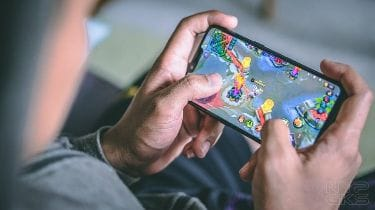
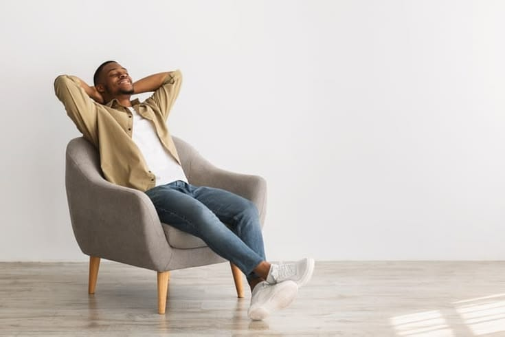

Artikel
Selamat datang di bagian artikel! Di sini saya membagikan
beberapa tulisan ringan tentang hobi yang saya sukai,
yaitu mendengarkan musik dan bermain game. Kedua hal ini
menjadi cara saya untuk mengisi waktu luang, melepas
penat, dan menikmati waktu santai. Semoga tulisan-tulisan
ini bisa menambah wawasan dan memberikan informasi yang
bermanfaat!

|
Hobi : Mendengarkan Musik 🎶
Musik bukan cuma sekadar hiburan, tetapi juga
bisa menemani berbagai aktivitas sehari-hari.
Mulai dari bersantai, mengerjakan tugas, sampai
bersih-bersih kamar, musik bisa bikin suasana
lebih seru dan menambah semangat. Selain itu,
musik juga punya banyak manfaat untuk kesehatan
mental, memperbaiki suasana hati, dan membantu
mengurangi stres.
Baca Selengkapnya →
|
|

|
Hobi : Bermain Game 🎮
Bermain game bisa menjadi hiburan yang
menyenangkan sekaligus melatih konsentrasi
dan kemampuan menyusun strategi. Namun,
kalau dimainkan terlalu lama, game bisa
mengganggu waktu belajar, pola tidur, dan
aktivitas sehari-hari. Karena itu, penting
untuk membatasi waktu bermain agar tetap bisa
menikmati game tanpa melupakan tanggung jawab
lainnya.
Baca Selengkapnya →
|
|

|
Waktu Untuk Diri Sendiri 🧘
Di tengah kesibukan sehari-hari, kita juga
perlu meluangkan waktu untuk diri sendiri.
Melakukan hal yang disukai, seperti
mendengarkan musik, bermain game, atau sekadar
bersantai, bisa membantu melepas penat,
memperbaiki suasana hati, dan mengembalikan
semangat. Dengan waktu istirahat yang cukup,
kita bisa menjalani aktivitas berikutnya
dengan lebih nyaman.
Baca Selengkapnya →
|
|